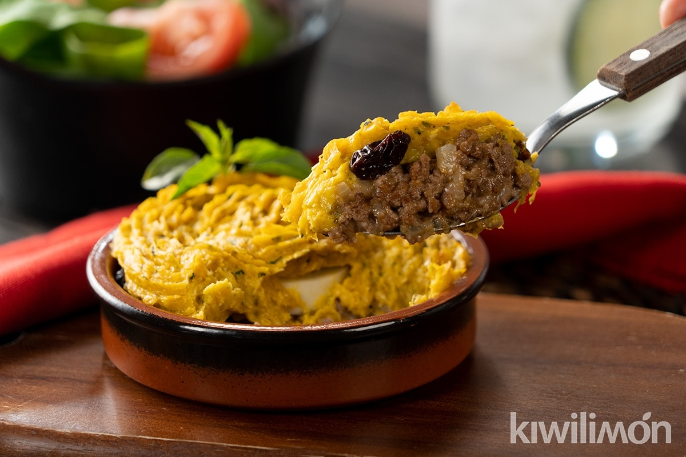

Pastel de Choclo / Corn Cake (Chilean Recipe)

Cremoso y delicioso, el pastel de choclo es tu opcion de loco.
Pastelera cremosa y gratinada hecha con choclos humeros de la temporada,
cubriendo una rico relleno de pino a base de carne vegetal y vegetales frescos sofritos.
Ingredientes (4 Personas)
- 4 Choclos humeros.
- 1 Cebolla Blanca Grande.
- 2 Pimentones rojos.
- 8 Aceitunas negras.
- Albahaca al gusto.
- 1 Taza de carne vegetal de Soya.
- 1 Cucharada de aceite de Oliva.
- 1 Cucharadita de ají de color.
- 1 Cucharadita de azucar blanca
Preparación
- Desgranar los choclos y molerlos en una juguera junto con la albahaca o moledora hasta que queden con consistencia de pasta.
- Por otro lado, picar la cebolla en cubos bien finos y sofreirlos en aceite de oliva.
- Cuando la cebolla se encuentre transparente, añadir el ají de color, sal y pimienta a gusto.
- Añadir el pimentón en cubos al sofrito de cebolla y dejar cocinando a fuego lento.
- Hidratar la carne vegetal con agua hirviendo durante 1 minuto. Luego colar el agua y lavar con agua fría hasta que el agua salga transparente.
- Añadir la carne vegetal al sofrito de verduras y mezclar todo para que los sabores se puedan integrar
- Con el Pino y la Pastelera listas, ahora podemos montar el plato para su cocción final. Precalentamos el horno a 200°C.
- En un pocillo de greda, colocar una porción de Pino, añadir una aceituna y colocar una capa de pastelera por encima del pino, de forma que quede "sellado".
- Colocamos un poco de azucar por sobre la pastelera y ya podemos meter al horno por unos 30 minutos.
- Chequear frecuentemente y en los últimos 5 minutos, colocar a temperatura máxima el horno y permitir que se dore la superficie. (Mantener Ojo igual en los platos para que no se quemen.
- Servir y Disfrutar !
Página Principal.